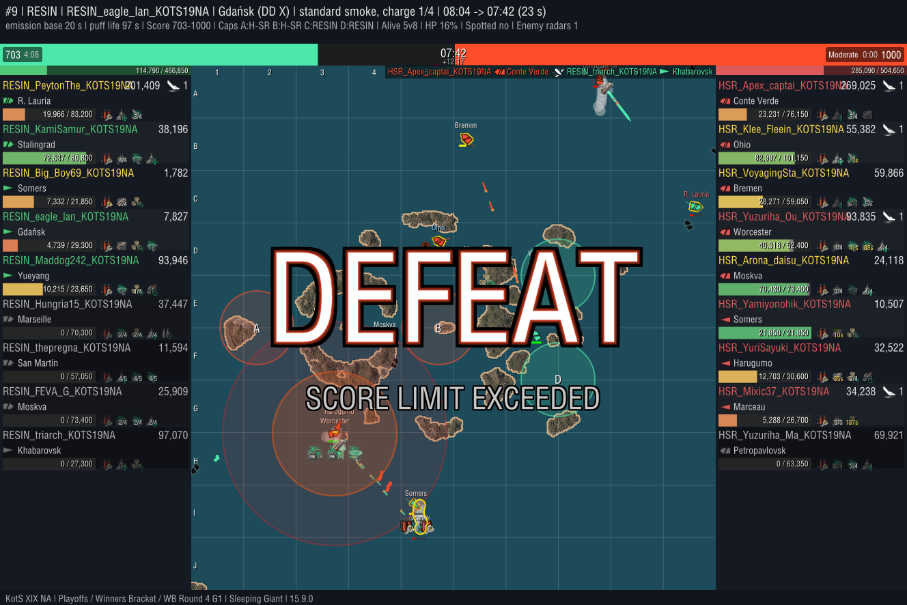
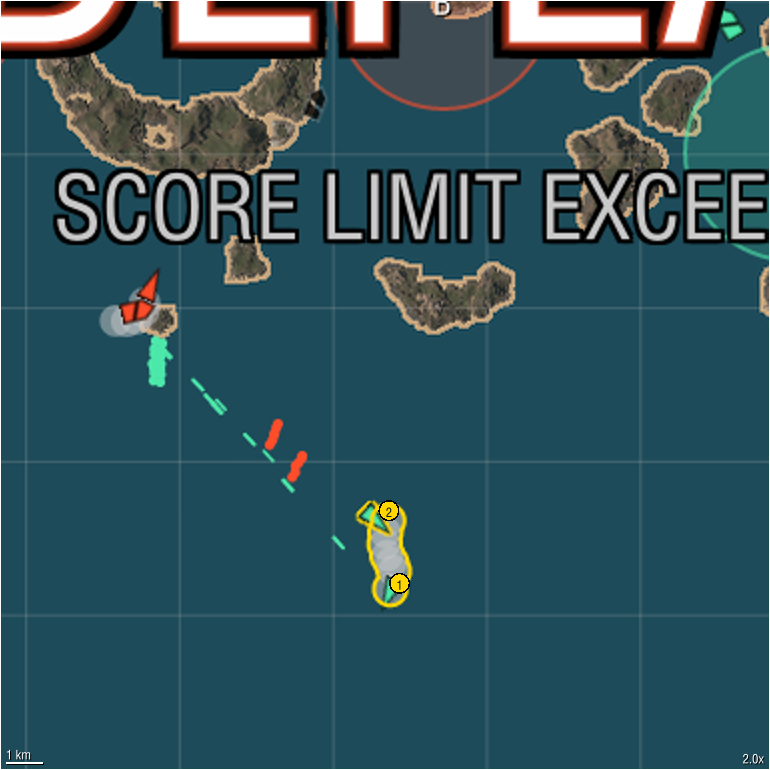

RESIN RESIN_eagle_lan_KOTS19NA Gdańsk
Sleeping Giant | RESIN vs H-SR | Playoffs Winners Bracket WB Round 4 | Game 1 | activated 08:04 (11:56 elapsed, mid), captured 07:42 | standard smoke Lvl_10_Gold
0 smoke damage 0 concealed, 0 detected


Clip available on request.
Classification auto-tagged: rule-based from the replay; fuzzy tags carry a confidence; hover a value for the numbers
| Smoker | Destroyer, standard smoke |
| Movement | Kiting |
| Coverage | Screen |
| Purpose | |
| Location | zone center; center lane; nearest cap B is a center cap on the flank |
| Front line | behind the midpoint between the fleets |
| Caps in range | B |
Confidence: high medium low rule-based
Deployment
| Duration | still standing at the end |
| Allies in smoke at capture | RESIN_eagle_lan_KOTS19NA, RESIN_Big_Boy69_KOTS19NA |
| Selfish smoke | no |
| Hand tags | untagged |
Objectives
| Distance to contested cap | on average 10.9 km from the edge of contested cap B, contested because it sits on the midline between the spawns |
| Cap outcome | no cap changed hands |
| Denial signal | 0.0 enemy ships in or near cap B in the minute before, 0.0 while the smoke stood |
| Score at capture | 703 : 1000 (swing -85) |
| Our radar from the smoke | none |
| Radar cap coverage | 0% of cap A within RESIN_eagle_lan_KOTS19NA's radar range; radar was not activated from the smoke |
Violence
| Smoke damage | 0 |
| Concealed vs detected | - |
| Detected shooters were spotted by | - |
| By where the shooter sat | no smoke damage |
| By kind | - |
| DD damage | 0 |
| Kills from smoke | 0 |
Shooters credited are in the Smokees table below.
Enemy ships damaged from the smoke
No enemy ship was damaged from this smoke.
The bad news
| Radar spots on us | none |
| Smoke deaths | none |
Smokees the smoker, every ally the smoke covered (inside it, firing undetected from behind it, or with it in their line of fire) and every credited shooter; numbers match the zoomed view
| Ship | Player | Role | Undetected | Detected by (time) | Damage dealt concealed / detected | Damage taken while covered | Kills | |
|---|---|---|---|---|---|---|---|---|
| 1 | Gdańsk | RESIN_eagle_lan_KOTS19NA | smoker | 100% | surface lit | 0 / 0 | 1,540 | 0 |
| 2 | Somers | RESIN_Big_Boy69_KOTS19NA | inside | 0% | radar 6 s, surface lit 2 s | 0 / 0 | 5,445 | 0 |